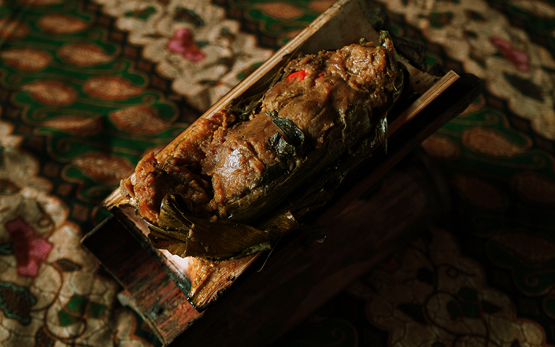
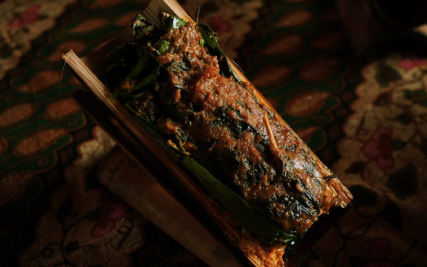

Bambu Ayam
Dibuat dari ayam pilihan yang dimarinasi dengan bumbu khas tradisional sunda yang memiliki cita rasa rempah-rempah yang gurih. Dibalut dengan daun pisang muda lalu bambu yang membuat cita rasa daging yang unik beraroma asap dan wangi

Bambu Gurame
Dibuat dari ikan gurame pilihan yang dimarinasi dengan bumbu khas tradisional sunda yang memiliki cita rasa rempah-rempah yang gurih. Dibalut dengan daun pisang muda lalu bambu yang membuat cita rasa daging yang unik beraroma asap dan wangi

Bambu Entog
Dibuat dari entog pilihan yang dimarinasi dengan bumbu khas tradisional sunda yang memiliki cita rasa rempah-rempah yang gurih. Dibalut dengan daun pisang muda lalu bambu yang membuat cita rasa daging yang unik beraroma asap dan wangi
Bambu Nila
Dibuat dari ikan nila pilihan yang dimarinasi dengan bumbu khas tradisional sunda yang memiliki cita rasa rempah-rempah yang gurih. Dibalut dengan daun pisang muda lalu bambu yang membuat cita rasa daging yang unik beraroma asap dan wangi